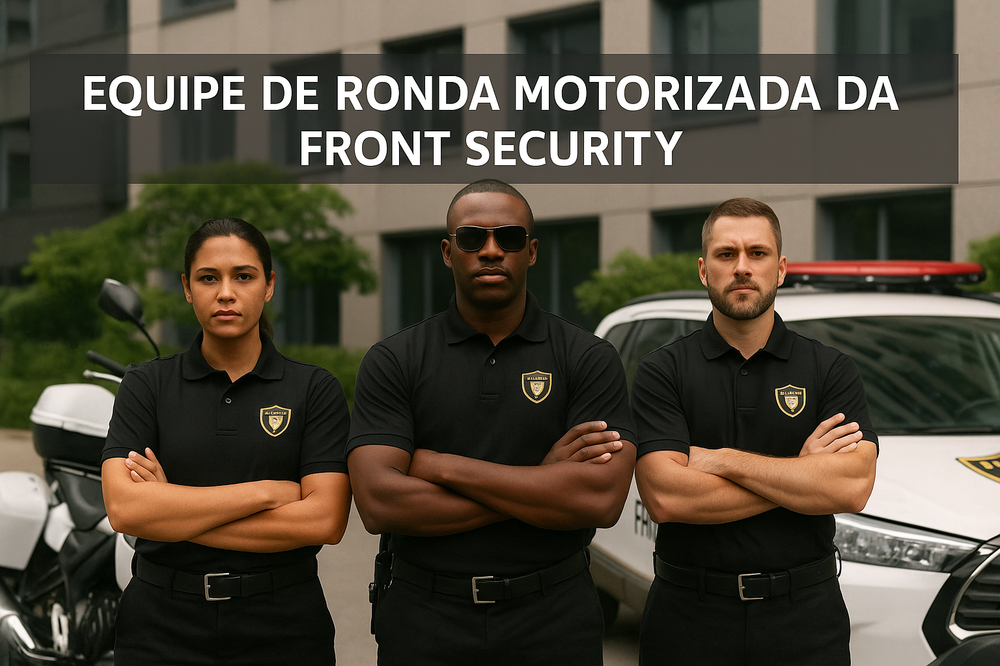
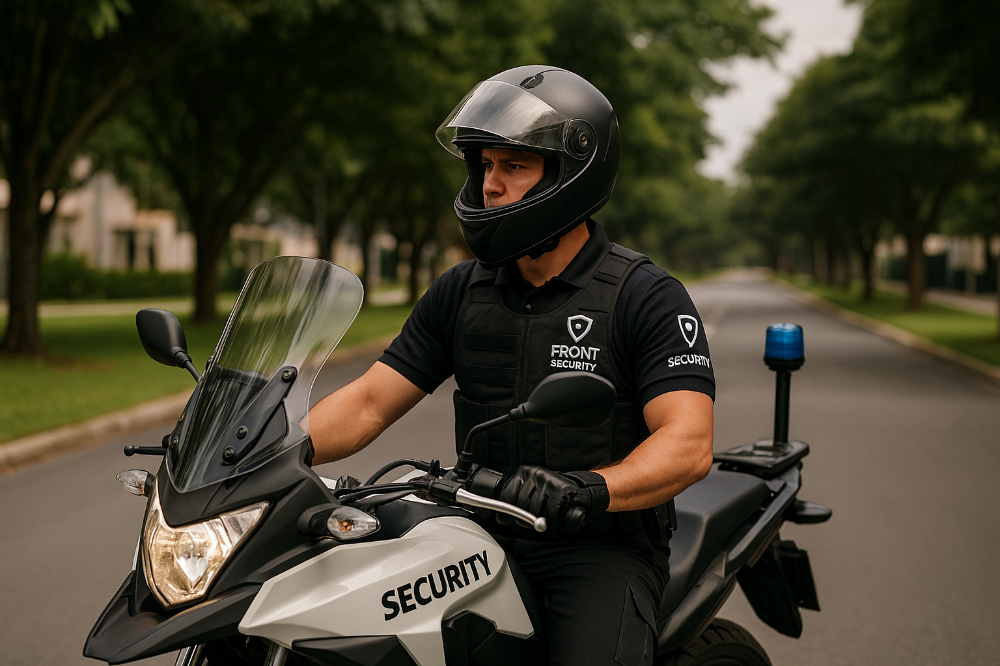

Ronda Motorizada
A Ronda Motorizada da Front Security é uma solução dinâmica e preventiva para garantir a vigilância de perímetros, ruas, condomínios e áreas comerciais. Nossas equipes utilizam veículos identificados e profissionais capacitados para realizar rondas estratégicas em horários variados, aumentando a sensação de segurança e inibindo ações criminosas.
Como Funciona a Ronda Motorizada
Nossos profissionais percorrem rotas pré-definidas, com check-ins em pontos estratégicos, utilizando sistemas de rastreamento em tempo real para garantir a cobertura completa da área contratada.
Vantagens da Ronda Motorizada
- Presença ostensiva em horários alternados.
- Veículos identificados com comunicação direta à central.
- Relatórios de rondas e registros de ocorrências.